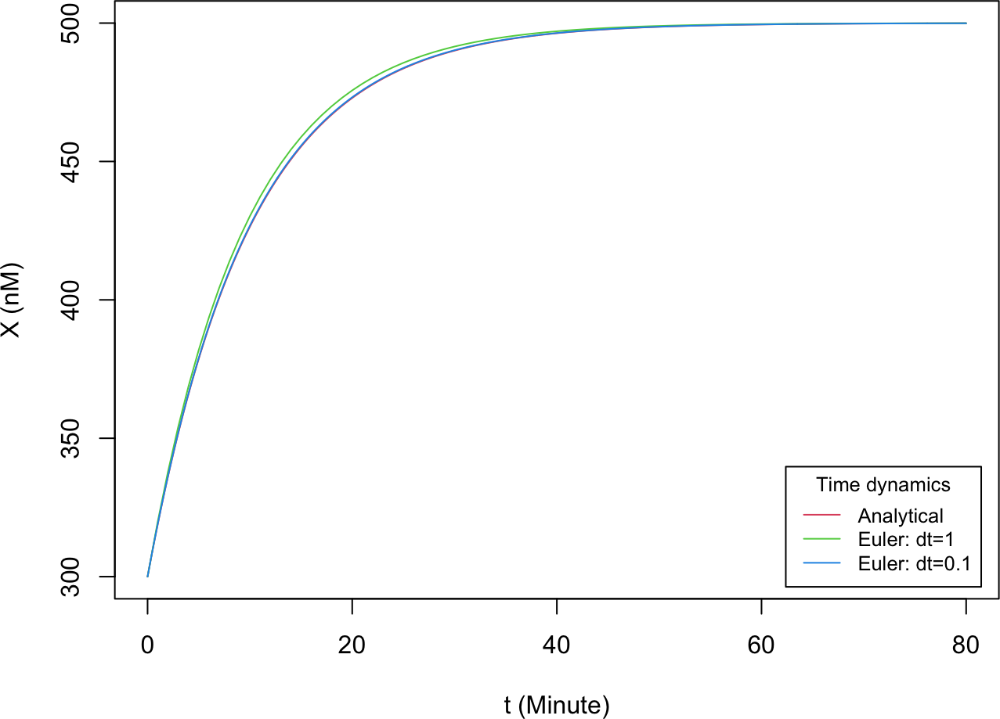
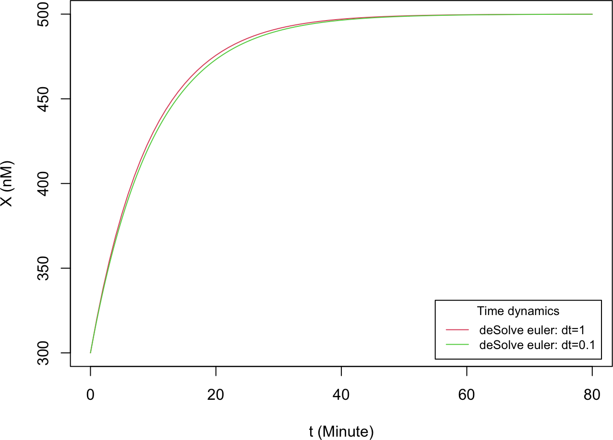
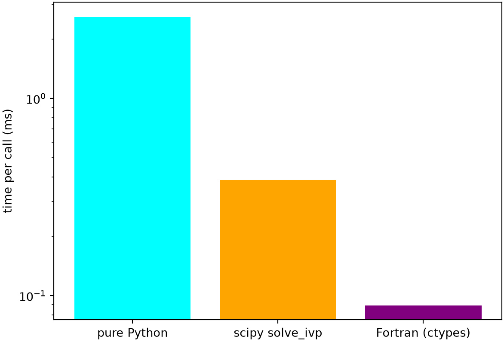
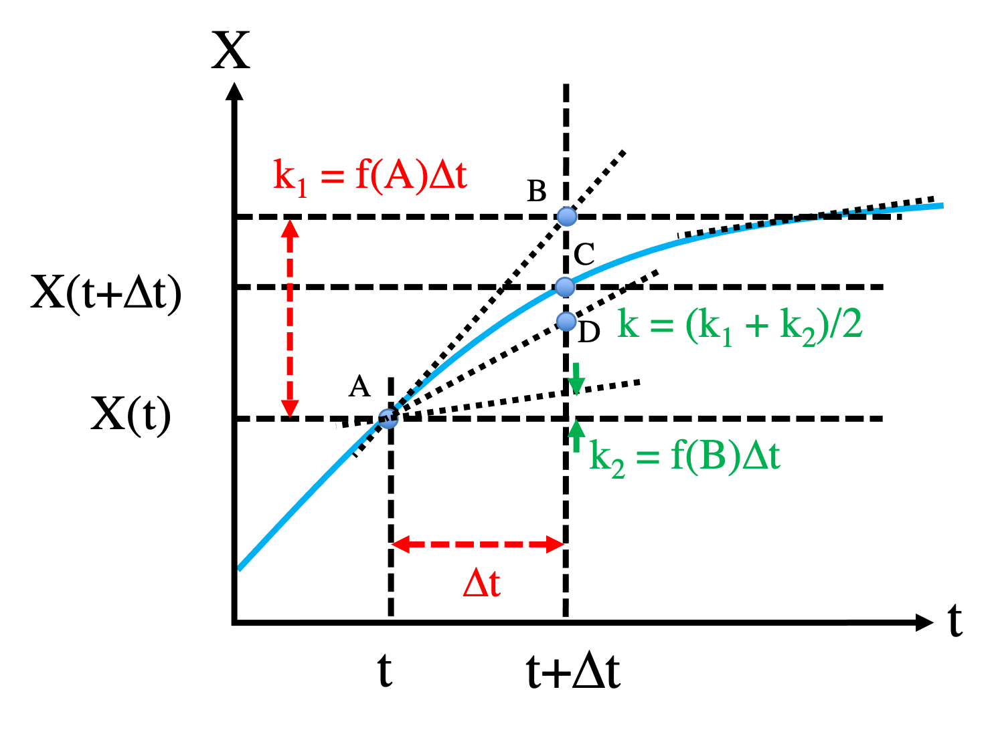
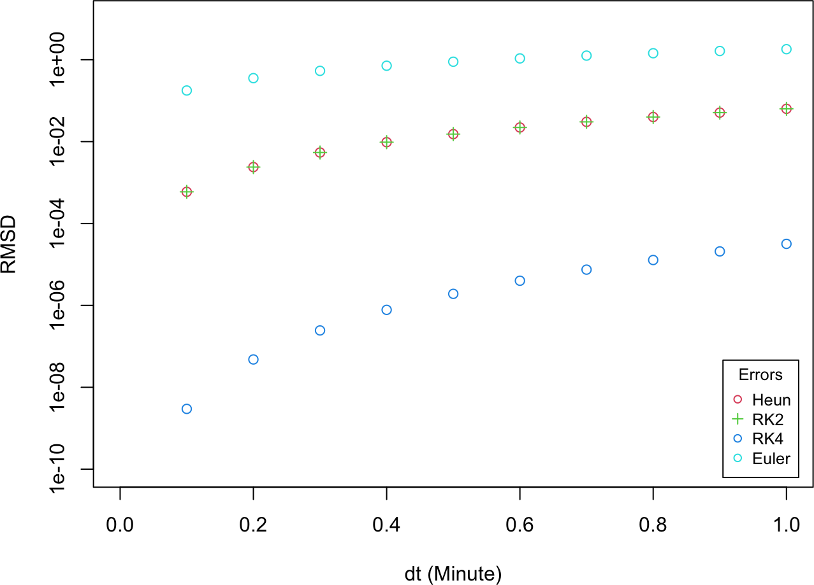

Here we introduce numerical methods to solve ODEs, using the constitutively expressed gene circuit from Part 2A as a running example:
\[\begin{equation}
\frac{dX}{dt} = f(X) \equiv g - kX \tag{1}
\end{equation}\]
The methods below (Euler, Heun, Runge–Kutta, backward Euler) are standard numerical integrators for ordinary differential equations; see (Hairer et al. 1993) for a thorough treatment and (Press et al. 2007) for practical implementations.
2B.1 First-order approximation: the Euler method
The Euler method is a first-order method for integrating ODEs (Hairer et al. 1993). Given \(X\) at time \(t\), it estimates \(X\) at the next time step \(t + \Delta t\) by
Starting from the initial condition \(X(t=0)\) and iterating Equation (2) yields \(X(t)\) at every time step. The smaller the step size \(\Delta t\), the more accurate the integration, but the more iterations (and the more compute time) are needed to simulate a fixed duration.
NoteRecipe 2B.1.1
Objective. Integrate the gene-expression ODE from an initial value and compare the numerical solution to the exact one at two step sizes.
Model. A constitutively expressed gene: transcription at a constant rate g with linear degradation at rate k, dX/dt = g - k*X (exact solution X(t) = g/k + (X0 - g/k)*exp(-k*t)).
Method. The Euler method, X(t+dt) = X(t) + (g - k*X(t))*dt, stepped from t = 0.
Test.g = 50, k = 0.1, X0 = 300; t = 0 to 80; dt = 1 and dt = 0.1.
Show. A plot of the Euler solution at dt = 1 and dt = 0.1 overlaid on the exact solution.
Verification. At dt = 0.1 the numerical curve tracks the exact solution closely (max error well under 1 nM); at dt = 1 there is a visible gap near t = 10; both reach g/k = 500.
R implementation
ode1 <-function(X0, t.total, g, k) { # analytical solution, see Part 2A X0 + (g / k - X0) * (1-exp(-k * t.total))}t_all <-seq(0, 80, 0.1) # time points for plottingdX <-function(t, X, g, k) { # derivative function, Equation (1) g - k * X}# Generic Euler integrator for a one-variable system. The ellipsis (...) passes# any extra parameters through to the derivative function.Euler <-function(derivs, X0, t.total, dt, ...) { t_all <-seq(0, t.total, by = dt) n_all <-length(t_all) X_all <-numeric(n_all) X_all[1] <- X0for (i in1:(n_all -1)) { X_all[i +1] <- X_all[i] + dt *derivs(t_all[i], X_all[i], ...) }cbind(t_all, X_all) # matrix of t and X(t) for all steps}g <-50k <-0.1results1 <-Euler(derivs = dX, X0 =300, t.total =80, dt =1, g = g, k = k)results2 <-Euler(derivs = dX, X0 =300, t.total =80, dt =0.1, g = g, k = k)plot(t_all, ode1(X0 =300, t.total = t_all, g = g, k = k), type ="l", col =2,xlab ="t (Minute)", ylab ="X (nM)", xlim =c(0, 80), ylim =c(300, 500))lines(results1[, 1], results1[, 2], col =3)lines(results2[, 1], results2[, 2], col =4)legend("bottomright", inset =0.02, title ="Time dynamics",legend =c("Analytical", "Euler: dt=1", "Euler: dt=0.1"),col =2:4, lty =1, cex =0.8)

Python implementation
import numpy as npimport matplotlib.pyplot as pltdef ode1(X0, t_total, g, k): # analytical solution, see Part 2Areturn X0 + (g / k - X0) * (1- np.exp(-k * t_total))t_all = np.arange(0, 80.1, 0.1) # time points for plottingdef dX(t, X, g, k): # derivative function, Equation (1)return g - k * X# Generic Euler integrator; **kwargs passes extra parameters to the derivative.def Euler(derivs, X0, t_total, dt, **kwargs): t_all = np.arange(0, t_total + dt, dt) n_all =len(t_all) X_all = np.zeros(n_all) X_all[0] = X0for i inrange(1, n_all): X_all[i] = X_all[i -1] + dt * derivs(t_all[i -1], X_all[i -1], **kwargs)return np.column_stack((t_all, X_all))g, k =50, 0.1results1 = Euler(derivs=dX, X0=300, t_total=80, dt=1, g=g, k=k)results2 = Euler(derivs=dX, X0=300, t_total=80, dt=0.1, g=g, k=k)plt.plot(t_all, ode1(X0=300, t_total=t_all, g=g, k=k), color="red", label="Analytical")plt.plot(results1[:, 0], results1[:, 1], color="green", label="Euler: dt=1")plt.plot(results2[:, 0], results2[:, 1], color="blue", label="Euler: dt=0.1")plt.xlabel("t (Minute)"); plt.ylabel("X (nM)")plt.xlim(0, 80); plt.ylim(300, 500)
With \(\Delta t = 0.1\) the Euler method closely tracks the analytical solution; with \(\Delta t = 1\) there is a visible discrepancy near \(t \approx 10\).
The term \(O(\Delta t^2)\) collects the leading truncated contribution as \(\Delta t \to 0\) and bounds the error of the expansion. Comparing Equations (1) and (3) recovers the Euler formula (2), so the local error of the Euler method is \(O(\Delta t^2)\). The same reasoning estimates the error of other integrators.
2B.3 Code efficiency
Beyond writing an integrator by hand, one can use an established ODE library or call compiled code for speed. Here we compare three routes for the same Euler integration: a hand-written implementation, a library routine, and a compiled function, and benchmark them.
R implementation
R has mature ODE solvers such as deSolve(Soetaert et al. 2010). The same system integrated with two step sizes reproduces our own implementation:
library(deSolve)# Derivative in the form deSolve expects; parms holds c(g, k)dy_deSolve <-function(t, y, parms) list(parms[1] - parms[2] * y)results3 <-ode(y =300, times =seq(0, 80, 1), func = dy_deSolve,parms =c(50, 0.1), method ="euler")results4 <-ode(y =300, times =seq(0, 80, 0.1), func = dy_deSolve,parms =c(50, 0.1), method ="euler")plot(results3[, 1], results3[, 2], type ="l", col =2,xlab ="t (Minute)", ylab ="X (nM)", xlim =c(0, 80), ylim =c(300, 500))lines(results4[, 1], results4[, 2], col =3)legend("bottomright", inset =0.02, title ="Time dynamics",legend =c("deSolve euler: dt=1", "deSolve euler: dt=0.1"),col =2:3, lty =1, cex =0.8)

For maximum speed the derivative and the integration loop can be written in a compiled language. The Fortran routine below (02-odes/src/sub_ode_1g.f90) implements the same Euler step:
function derivs_1g(t, x)implicitnonedouble precision:: derivs_1gdouble precision, intent(in):: t, xdouble precision:: g = (50.d0), k = (0.1d0) derivs_1g = g - k * xend function derivs_1gsubroutine ode_1g_euler(x0, dt, nsteps, results)implicitnoneinteger, intent(in):: nstepsdouble precision, intent(in):: x0, dtdouble precision, dimension(2, nsteps), intent(out):: resultsdouble precision:: derivs_1ginteger:: idouble precision:: t, x t =0.d0 x = x0do i =1, nsteps t = t + dt x = x + derivs_1g(t, x) * dt results(1, i) = t results(2, i) = xenddoend subroutine ode_1g_euler
We compile it into a shared library with gfortran (run once at the terminal, not during rendering):
Python’s general-purpose ODE solver is scipy.integrate.solve_ivp(Virtanen et al. 2020). Note it has no dedicated fixed-step Euler method; by default it uses an adaptive Runge–Kutta (RK45) scheme, so its output is not step-for-step identical to the Euler results but solves the same system:
from scipy.integrate import solve_ivpsol = solve_ivp(lambda t, X: g - k * X, [0, 80], [300], t_eval=np.arange(0, 80.1, 0.1))plt.plot(sol.t, sol.y[0], color="green", label="scipy solve_ivp (RK45)")plt.xlabel("t (Minute)"); plt.ylabel("X (nM)")plt.xlim(0, 80); plt.ylim(300, 500)
The same compiled Fortran shared library can be called from Python through ctypes. gfortran appends a trailing underscore to subroutine names, arguments are passed by reference, and the results(2, nsteps) array is column-major (stored as t, x, t, x, …):
pure Python : 2.60 ms
scipy solve_ivp : 0.39 ms
Fortran (ctypes) : 0.09 ms
plt.bar(labels, times_ms, color=["cyan", "orange", "purple"])plt.ylabel("time per call (ms)"); plt.yscale("log")plt.show()

For this simple, fixed-step problem the hand-written loop is typically a little faster than deSolve (which stores each step’s result in a list), and the compiled Fortran routine is about an order of magnitude faster than either. Two things make the R versions slow: the derivative function is interpreted R, and the array of time steps is repeatedly processed in the R interpreter during the loop. The Fortran routine avoids both: the derivative is compiled in, and, although it allocates a result matrix, that matrix is only used for output, never during the integration. Exact timings vary by machine and run, and deSolve can itself call compiled derivative functions (in C or Fortran), which would narrow the gap. None of this makes libraries slow. They are robust and general, but for tight inner loops a compiled kernel wins.
2B.4 Second-order approximation: Heun’s method
In the Euler method the derivative is treated as constant over the interval \(t \to t+\Delta t\). This works well when \(\Delta t\) is small and the derivative varies slowly; otherwise a higher-order approximation is required. Heun’s method (Hairer et al. 1993) is a second-order scheme, illustrated below.

We start from point A, \((X(t), t)\). An Euler step lands at point B, \((X(t) + f(X,t)\Delta t,\ t + \Delta t)\), which is still some distance from the true point C on the \(X(t)\) curve. To do better, we evaluate the derivative at B, \(f(X(t) + f(X,t)\Delta t,\ t + \Delta t)\), and average the two slopes (at A and at B); this takes us to point D, which is usually closer to C than B is. In math,
where \(\frac{df}{dt} = \frac{\partial f}{\partial t} + f\frac{\partial f}{\partial X}\) (chain rule, using \(\frac{dX}{dt} = f\)). Expanding \(k_2\) to the same order,
so \(\dfrac{k_1 + k_2}{2} = f(X,t)\Delta t + \dfrac{1}{2}\dfrac{df}{dt}\Delta t^2 + O(\Delta t^3) = X(t+\Delta t) - X(t) + O(\Delta t^3)\), which proves Heun’s method is accurate to \(O(\Delta t^3)\) per step.
NoteRecipe 2B.4.1
Objective. Implement a second-order Heun integrator for a one-variable ODE.
Model. A constitutively expressed gene: transcription at a constant rate g with linear degradation at rate k, dX/dt = g - k*X (exact solution X(t) = g/k + (X0 - g/k)*exp(-k*t)).
Method. Heun’s method: take an Euler step to a predicted endpoint, evaluate the slope there, and advance by the average of the starting and predicted slopes.
Test.g = 50, k = 0.1, X0 = 300.
Show. A plot of the Heun solution overlaid on the exact solution.
Verification. At the same step size it is closer to the exact solution than Euler; halving the step cuts its error by roughly a factor of 4.
RK2, the midpoint method (Hairer et al. 1993), takes a trial half-step to the midpoint of the interval and uses the derivative there for the full step:
\[\begin{equation}
\begin{aligned}
k_1 &= f(X(t), t)\,\Delta t \\
k_2 &= f\!\left(X(t) + \tfrac{1}{2}k_1, t + \tfrac{1}{2}\Delta t\right)\Delta t \\
X(t+\Delta t) &= X(t) + k_2
\end{aligned} \tag{5}
\end{equation}\]
NoteRecipe 2B.5.1
Objective. Implement the second-order Runge-Kutta (midpoint) integrator.
Model. A constitutively expressed gene: transcription at a constant rate g with linear degradation at rate k, dX/dt = g - k*X (exact solution X(t) = g/k + (X0 - g/k)*exp(-k*t)).
Method. RK2: take a trial half-step to the interval midpoint and use the slope there for the full step.
Test.g = 50, k = 0.1, X0 = 300.
Show. A plot of the RK2 solution overlaid on the exact solution.
Verification. Accuracy comparable to Heun and better than Euler at the same step size, checked against the exact solution.
\[\begin{equation}
\begin{aligned}
k_1 &= f(X, t)\,\Delta t \\
k_2 &= f\!\left(X + \tfrac{k_1}{2}, t + \tfrac{\Delta t}{2}\right)\Delta t \\
k_3 &= f\!\left(X + \tfrac{k_2}{2}, t + \tfrac{\Delta t}{2}\right)\Delta t \\
k_4 &= f\!\left(X + k_3, t + \Delta t\right)\Delta t \\
X(t+\Delta t) &= X(t) + \frac{k_1 + 2k_2 + 2k_3 + k_4}{6}
\end{aligned} \tag{6}
\end{equation}\]
NoteRecipe 2B.6.1
Objective. Implement the fourth-order Runge-Kutta integrator.
Model. A constitutively expressed gene: transcription at a constant rate g with linear degradation at rate k, dX/dt = g - k*X (exact solution X(t) = g/k + (X0 - g/k)*exp(-k*t)).
Method. RK4: combine four slope evaluations across the step (start, twice at the midpoint, end) with weights 1, 2, 2, 1.
Test.g = 50, k = 0.1, X0 = 300.
Show. A plot of the RK4 solution overlaid on the exact solution.
Verification. Far more accurate than RK2 or Euler at the same step size; halving the step cuts its error by roughly a factor of 16.
rmsd <-function(array1, array2) { num <-length(array1) diff <- array1 - array2sqrt(diff %*% diff / num)}dt_all <-seq(0.1, 1, 0.1)errors_Euler <- errors_Heun <- errors_RK2 <- errors_RK4 <-numeric(length(dt_all))for (ind inseq_along(dt_all)) { dt <- dt_all[ind] t_pts <-seq(0, 80, dt) exact <-ode1(X0 =300, t.total = t_pts, g = g, k = k) errors_Euler[ind] <-rmsd(exact, Euler(dX, 300, 80, dt, g = g, k = k)[, 2]) errors_Heun[ind] <-rmsd(exact, Heun(dX, 300, 80, dt, g = g, k = k)[, 2]) errors_RK2[ind] <-rmsd(exact, RK2(dX, 300, 80, dt, g = g, k = k)[, 2]) errors_RK4[ind] <-rmsd(exact, RK4(dX, 300, 80, dt, g = g, k = k)[, 2])}plot(dt_all, errors_Heun, type ="p", col =2, log ="y",xlab ="dt (Minute)", ylab ="RMSD", xlim =c(0, 1), ylim =c(1e-10, 10))points(dt_all, errors_RK2, pch =3, col =3)points(dt_all, errors_RK4, col =4)points(dt_all, errors_Euler, col =5)legend("bottomright", inset =0.02, title ="Errors",legend =c("Heun", "RK2", "RK4", "Euler"),col =2:5, pch =c(1, 3, 1, 1), cex =0.8)

The shared Fortran library also provides ode_1g_rk2 and ode_1g_rk4. As a check, we compare the compiled RK4 against our R RK4, RK2, and Euler results (and the exact solution) at \(\Delta t = 0.1\) via the RMSD:
dt <-0.1; t_total <-80.0; X0 <-300.0nsteps <-as.integer(t_total / dt)res <-matrix(0, nrow =2, ncol = nsteps)fort_rk4 <-.Fortran("ode_1g_rk4", as.double(X0), as.double(dt),as.integer(nsteps), res)a <-rbind(c(0, X0), t(fort_rk4[[4]]))c(vs_RK4 =rmsd(a[, 2], RK4(dX, 300, 80, dt, g = g, k = k)[, 2]),vs_RK2 =rmsd(a[, 2], RK2(dX, 300, 80, dt, g = g, k = k)[, 2]),vs_Euler =rmsd(a[, 2], Euler(dX, 300, 80, dt, g = g, k = k)[, 2]),vs_exact =rmsd(a[, 2], ode1(300, seq(0, t_total, dt), g = g, k = k)))
The Fortran RK4 matches the R RK4 (and the exact solution) to a tiny RMSD, while RK2 and especially Euler differ more, confirming that the compiled and interpreted RK4 agree.
RK4 is typically orders of magnitude more accurate than RK2, which is in turn orders of magnitude more accurate than Euler. RK4 needs four derivative evaluations per step, RK2 two, and Euler one. But RK4 and RK2 tolerate much larger step sizes at the same accuracy, so they are usually more efficient overall.
This forward (explicit) Euler method can become unstable. For our model, \(X_{n+1} = hg + (1-hk)X_n\), which diverges once \(h > 1/k\). The backward (implicit) Euler method instead evaluates the derivative at the new point:
In general \(X_{n+1}\) must be solved for (e.g. by Newton’s method or fixed-point iteration), but here \(f = g - kX_{n+1}\) is linear, giving the analytical solution
\[X_{n+1} = \frac{X_n + hg}{1 + hk} .\]
We use stiff parameters (\(k = 10\)) where forward Euler with \(\Delta t = 0.2\) is unstable.
NoteRecipe 2B.8.1
Objective. Integrate a stiff version of the model where the forward Euler method blows up, using an implicit step.
Model. A constitutively expressed gene with a large degradation rate (stiff), dX/dt = g - k*X; the exact solution still decays to g/k.
Method. Backward (implicit) Euler, X(t+dt) = X(t) + (g - k*X(t+dt))*dt; since the right-hand side is linear this rearranges to X_next = (X + dt*g) / (1 + dt*k).
Test. Stiff parameters g = 50, k = 10, X0 = 3; t = 0 to 4; dt = 0.2.
Show. A plot comparing forward Euler and backward Euler at dt = 0.2 against the exact solution.
Verification. Forward Euler at dt = 0.2 oscillates and diverges, while backward Euler stays stable and tracks the exact solution toward g/k = 5.
R implementation
g <-50; k <-10; t.total <-4t_all <-seq(0, t.total, 0.1)result_euler <-Euler(derivs = dX, X0 =3, t.total = t.total, dt =0.2, g = g, k = k)result_exact <-cbind(t_all, ode1(X0 =3, t.total = t_all, g = g, k = k))plot(result_euler[, 1], result_euler[, 2], type ="l", col =2,xlab ="t", ylab ="X", xlim =c(0, t.total), ylim =c(2, 8))lines(result_exact[, 1], result_exact[, 2], col =3)legend("bottomright", inset =0.02, legend =c("Euler dt=0.2", "Exact"),col =2:3, lty =1, cex =0.8)
Backward Euler is still only first-order accurate, but it is stable at step sizes where forward Euler diverges, the defining advantage of implicit methods for stiff systems.
Hairer, Ernst, Syvert P. Nørsett, and Gerhard Wanner. 1993. Solving Ordinary Differential Equations i: Nonstiff Problems. 2nd ed. Springer Series in Computational Mathematics. Springer-Verlag. https://doi.org/10.1007/978-3-540-78862-1.
Press, William H., Saul A. Teukolsky, William T. Vetterling, and Brian P. Flannery. 2007. Numerical Recipes: The Art of Scientific Computing. 3rd ed. Cambridge University Press.
Soetaert, Karline, Thomas Petzoldt, and R. Woodrow Setzer. 2010. “Solving Differential Equations in R: Package deSolve.”Journal of Statistical Software 33 (9): 1–25. https://doi.org/10.18637/jss.v033.i09.
Virtanen, Pauli, Ralf Gommers, Travis E. Oliphant, et al. 2020. “SciPy 1.0: Fundamental Algorithms for Scientific Computing in Python.”Nature Methods 17: 261–72. https://doi.org/10.1038/s41592-019-0686-2.